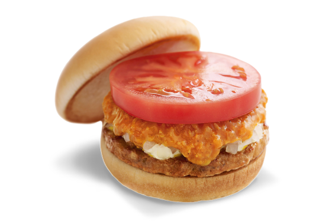
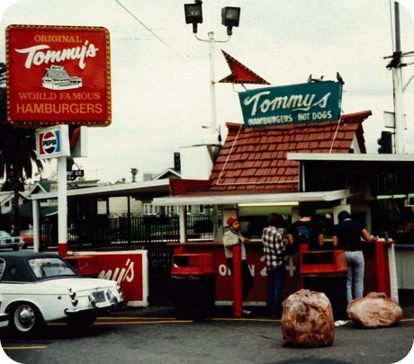

關於我們
熱衷於創造優質&美味的漢堡
自 1972 年以來，MOS Burger 一直提供各種獨特的原創MOS 漢堡以及當地特色菜。菜單和風格可能已經改變，但 MOS 的政策和對製作美味、優質漢堡的熱情承諾從未改變。在日本外，MOS Burger 繼續為世界各國帶來美味。

「提供美味的餐點，讓顧客能感受到幸福!!」
「提供美味的餐點，讓顧客能感受到幸福!!」
我們希望用心以真誠、親切的服務，
提供好吃、安全又健康的餐點給大家。
我們的起源
1960 年代，櫻田先生在洛杉磯的一家投資公司工作時，經常光顧當地一 家名為 Tommy's的漢堡連鎖店。受到“現點現做”的概念和Tommy's美味漢堡的啟發，櫻田先生突然有個點子，”將這樣的產品帶回家鄉也會受 到喜愛”
回到日本後，櫻田先生開始他的創業，並於 1972 年在東京開設第一家MOS Burger 。櫻田先生致力於研發適合日本人口味的食品，並激勵他的團隊創造經得起時間考驗的創新餐點。當時最好的創意之一是米漢堡，1987年在日本推出時大受歡迎。
MOS漢堡是如何命名的?
MOS 代表山脈、海洋和太陽。意思是“屹立如山，心胸如海，熱情如太陽”
那是我們的創辦人對人類和大自然永無止境的愛
山
端莊高貴
海洋
廣闊無垠
太陽
充滿活力和賦予生命
從日本的MOS到世界的MOS
自 1991 年在台灣開設第一家海外門店以來，我們在整個亞太地區積極開設門市。截至 2021 年 3 月底，我們在日本、亞洲、太平洋和大洋洲擁有 1700 多家餐廳。
1972年
第一家 MOS Burger 在東京開業
1979年
日本第 100 家 MOS BURGER 店開業
1991年
日本第 1,000 家 MOS BURGER 門店開業。海外第一家MOS BURGER 專賣店在台灣開業
2007年
泰國第一家 MOS BURGER 門店 Central World 在曼谷開業
2006年
MOS BURGER全港首間分店APM商場於觀塘開幕
1993年
新加坡第一家 MOS BURGER 門店 Isetan Scotts 開業
2008年
印度尼西亞第一家 MOS BURGER 商店 Plaza Senayan 在雅加達開業
2010年
MOS BURGER中國首家門店——思明南路店在福建廈門開業
2011年
澳大利亞第一家 MOS BURGER 門店 Sunnybank Plaza 在昆士蘭州布里斯班開業
2020年
菲律賓第一家 MOS BURGER 門店 Robinsons Galleria 在馬尼拉開業
2012年
韓國第一家 MOS BURGER 門店 Jamsil Lotte 在首爾開業
2012年
海外第300家MOS BURGER店開業